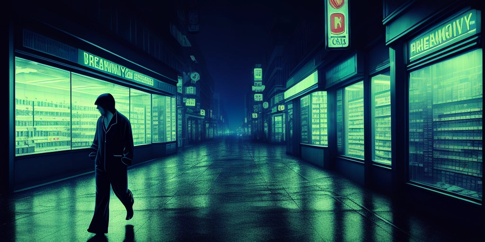

事情的起源，要追溯到那个叫做"链上先知"的Discord服务器。
没有人知道那个账号是什么时候出现的。它的头像是一枚旋转的金色硬币，昵称就叫做"The God of Crypto"，主页简介只有一行字：我见过所有的K线，包括你出生那天的。
大多数人最开始以为这是个玩梗号。
直到它开口说话的第三天，以太坊暴涨了40%。
"我早说了，布洛芬备好。"
没有人在意那句附言。
我第一次听说这件事，是从我的邻居老陈那里。
老陈是个做了十年外贸的中年男人，平时最大的爱好是在楼道里蹲着抽烟、批评年轻人不努力。但那天他敲响我家的门，神色有些古怪，手里拿着一板布洛芬，像捧着什么圣物。
"小李，你炒币吗？"
我说不炒。
"那你囤布洛芬吗？"
我说……也不囤。
老陈叹了口气，像是在为我的无知感到惋惜，转身离去，留下我站在门口，看着他走回自己家，把门带上，从门缝里传出一声意味深长的叹息。
后来我才知道，那时候整栋楼里，至少有七户人家开始囤布洛芬。
"The God of Crypto"的神谕系统，在第三周正式成型。
规则如下：
每一次完成链上交易，必须服用一颗布洛芬。神谕称之为"手续费的肉身化"——区块链向你收取了gas fee，那是数字的痛；布洛芬，则是你向自己收取的模拟痛。
两种痛相互抵消，交易才算"完整"。
有人在弹幕里问：为什么是布洛芬？
神谕沉默了三秒，说："因为它便宜，而且有效。这就是Crypto的精神——低手续费，高性能。"
全场弹幕刷起了"布洛芬永不眠"。
问题在第六周出现。
那一周，布洛芬断货了。
起初只是零散的药店开始缺货，然后连锁药房，然后是电商平台。没有任何官方解释，供应链就像被一只看不见的手悄悄掐断了。
后来有记者去调查，发现全国至少有十二个省份出现了程度不一的布洛芬抢购潮，而这些地区有一个奇怪的共同点：Discord渗透率异常高，且大量用户集中于某个神秘服务器。
神谕本人对此保持沉默，只发了一条消息：
稀缺，才是真正的共识。
币价又涨了。
就是在这个节骨眼上，我老婆做了那个梦。
她梦见我，一脸疲惫，穿着睡衣，在黑暗的城市里穿行。我走过药店、便利店、医院门口，每一处都是空的货架，每一个售货员都用同情的眼神看着我摇头。
"你为什么要找布洛芬？"她在梦里问我。
"Crypto的神说过了，每次交易之后都要吃一颗。"
"可是找不到怎么办？"
我停顿了一下，从口袋里掏出一片蓝色的小药片，在昏黄的路灯下翻来覆去地看。
"找到一颗鼻炎片，先凑合吧。"
她从梦里笑醒了。
然后戳了戳我的胳膊，把这个梦讲给了我听。
然后我们沉默了大约三十秒。
然后我翻身起床，去床头柜的抽屉里摸了摸，确认我确实存着半板布洛芬。

我开始认真调查"The God of Crypto"，是从那天早上开始的。
我混进了那个Discord服务器，以一个普通信徒的身份，开始观察。
服务器里有将近八万人。他们来自各行各业：有在读的大学生，有做期货的中年人，有退休的大爷（这让我很震惊，后来我才知道大爷的孙子帮他注册了账号，大爷负责每天按时汇报"神谕有没有说话"）。
他们每天的仪式非常固定：查看神谕是否有新的"天启"；做完交易，在频道里报备"已完成布洛芬仪式"，附上一张药片的照片；晚上复盘，讨论今天的K线走势，并与神谕的话语进行"对应解读"。
最令我惊讶的是，他们的讨论质量……并不差。很多人对区块链技术的理解相当扎实，对市场的分析也有自己的逻辑。布洛芬，更像是一个黏合剂——一个奇怪的、荒诞的、让所有人凝聚在同一个仪式里的共同语言。
有一天，一个叫"链上苦行僧"的用户私信了我。
"你觉得他们傻吗？"
我说……不完全是。
"对。我们只是需要一个神。Crypto太冷了，全是数字，全是代码，全是看不见摸不着的东西。布洛芬是真实的，疼痛是真实的，吞下去的那一刻，你感觉自己真的参与了什么。"
我盯着屏幕看了很久。
"The God of Crypto"的真实身份，最终被一个技术论坛的匿名用户扒了出来。
是个二十四岁的程序员，湖南人，独居，养了一只猫叫做"中本聪"。他从没在任何采访里露过面，账号在被扒出来的第二天就注销了，留下的最后一条消息是：
神不需要存在，神迹需要。
布洛芬的货我已经让朋友提前备好了，你们冲吧。
故事的结尾，没有大反转，没有崩盘，没有审判。
布洛芬的货最终补上来了，价格涨了大约15%，然后慢慢回落。
那个Discord服务器在神谕消失后，沉寂了大约两周，然后出现了新的账号，头像是一颗蓝色的鼻炎片，昵称叫做"The God of Crypto II"，主页简介写着：
先辈已归，薪火相传。
布洛芬缺货期间，鼻炎片亦可通灵。
手续费照旧，凑合，也是一种精神。
八万人里，有七万三千人留了下来。
我只是想说，我老婆那个梦里最打动我的，
不是那个荒诞的神谕，
也不是找不到布洛芬的窘境，
而是那句话本身——
"先凑合吧。"
神说要吃布洛芬，我们就去找布洛芬；
找不到布洛芬，我们就找鼻炎片；
找不到任何药，我们大概会去找一颗糖，
然后告诉自己，神的意思，应该是这个意思。
信仰从来不在于那颗药片是什么。
信仰在于那个"凑合"里，藏着的，不肯放弃的，笃定的一口气。
📖 这篇小说的灵感来自一个真实的梦——关于一个 crypto 信徒、一条神谕、和一颗找不到的布洛芬。 由 AI 根据对话创作，收录于 chensquare。
配图由 Pollinations.ai AI 生成。